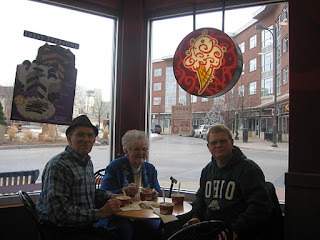

Kid-Show Book Bundle
1/9/2012
This auction is for two books: Mark Wade's VENTRILO-SECRETS (1983) is a three part work covering the basics for organizing and performing Kid-Shows, a subject Mark knows as well or better than most any performer since kid shows are the primary focus of his career. Only a relative few copies of VENTRILO-SECRETS were printed. This copy is in very good condition.
The second book in this auction is KID-SHOW VENTRILOQUISM, (1996/2002 - this is the 2002 edition). Mark teaches everything from ventriloquism technique to complete comedy routines for kidshows. He also shares insights on how to be successful in entertaing with ventriloquism, puppetry, and comedy. 132 pages, illustrated. New and unread copy.
Auction: http://cgi.ebay.com/ws/eBayISAPI.dll?ViewItem&item=290655825138
{kind=link}
The second book in this auction is KID-SHOW VENTRILOQUISM, (1996/2002 - this is the 2002 edition). Mark teaches everything from ventriloquism technique to complete comedy routines for kidshows. He also shares insights on how to be successful in entertaing with ventriloquism, puppetry, and comedy. 132 pages, illustrated. New and unread copy.
Auction: http://cgi.ebay.com/ws/eBayISAPI.dll?ViewItem&item=290655825138
 |
| Last week Adelia and I were blessed to spend a delightful afternoon with Mark (right) and Jody (behind camera) Wade. The ice cream was just a sweet bonus! |
{kind=link}